Análisis de señales discretas en el dominio de la frecuencia
Contenido
0. Introducción
1. La transformada discreta de Fourier
2. La transformada rápida de Fourier
0. Introducción.
Representación de señales periódicas (SDF)
Sea x (n) una señal periódica de periodo N, tal que x(n) = x(n + N) para toda n. Esta señal se puede representar mediante un desarrollo de series de Fourier:
donde k es un entero y {ck} son los coeficientes de la representación. A causa de la periodicidad tenemos
Solo bastan N exponenciales complejas periódicas para la representación de x(n) en series de Fourier.
Empleando propiedades de ortogonalidad y manipulación matemática podemos obtener los coeficientes de la serie de Fourier a partir de x(n):
Donde la secuencia ck es periódica con periodo N, esto es, ck = ck+N .
Entonces, el espectro de una señal x(n) periódica con periodo N, es también una secuencia periódica de periodo N.
Determinar el espectro de:
Propiedades del desarrollo en SFD.
Linealidad.
Dadas dos señales periódicas x1(n) y x2(n), ambas con periodo N, tales que
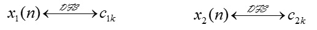
Entonces
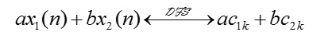
Desplazamiento de una señal.
Si una señal periódica x(n), tiene como coeficientes de Fourier ck , entonces x(n - m) es una versión desplazada de x(n) y
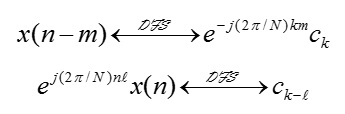
Convolución periódica.
Sean x1(n) y x2(n) dos secuencias periódicas, ambas con periodo N, y cuyos coeficientes de su desarrollo en serie de Fourier son c1k y c2k respectivamente. Si tenemos
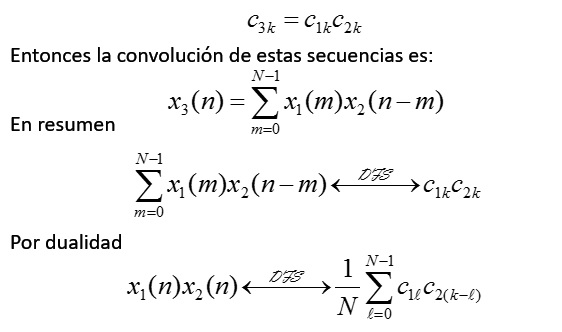
Dualidad.
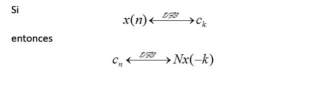
Transformada de Fourier de señales aperiódicas en tiempo discreto.
La TF de una señal de energía finita x(n) (aperiódica) en el tiempo discreto se define como
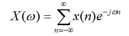
X(ω) es una descomposición de x(n) en sus componentes de frecuencia. Donde, X(ω) es periódica con periodo 2π, esto es
X(ω + 2πk) = X(ω)
Finalmente, la transformada inversa es:
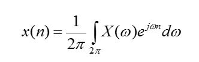
La suma de convolución
Sea h(n, k) la respuesta del sistema a un impulso unitario en el instante n = k, para -∞ < k < ∞. Esto es:
y(n, k) ≡ h(n, k) = T[δ(n - k)]
Si escalamos el impulso a la entrada por ck ≡ x(k), esto es
ck h(n, k) = x(k) h(n, k)
Y si x(n) se expresa como:
Tenemos finalmente que la respuesta del sistema a x(n) es
Si la respuesta del sistema LTI a δ(n) se denota como h(n)
Esto es:
h(n) ≡ T[δ(n)]
Por la propiedad de invarianza, la respuesta a δ(n - k) es
h(n - k) = T[δ(n - k)]
Entonces tenemos que:
La función de respuesta del sistema LTI se conoce como suma de convolución.
La entrada x(n) es “convolucionada” por la respuesta al impulso h(n) para producir la salida y(n).
Análisis de la suma de convolución.
Deseamos calcular la salida del sistema para n = n0, entonces:
Observaciones:
x(k) y h(n0-k) son funciones del índice k.
x(k) y h(n0-k) se multiplican entre si para producir una secuencia de productos.
y(n0) es la suma de los productos.
h(n0-k) se obtiene de h(k), reflejándola alrededor de k = 0, produciendo h(-k), y luego desplazando en n0.
La suma de convolución involucra cuatro pasos:
1. Reflejo. Se refleja h(k) alrededor de k = 0 para tener h(-k).
2. Desplazamiento. Se desplaza h(-k) en n0 a la derecha (izquierda) si n0 es positivo (negativo) para obtener h(n0 - k).
3. Multiplicación. Se multiplica x(k) por h(n0-k) para tener la secuencia de productos vn0(k) ≡ x(k)h(n0-k).
4. Suma. Se suman todos los valores de la secuencia de productos vn0(k) para obtener el valor de la salida en n = n0.
Si nos interesa evaluar la respuesta del sistema para todos los instantes de tiempo -∞ < n < ∞, repetimos los pasos del 2 al 4 para todos los posibles desplazamientos n.
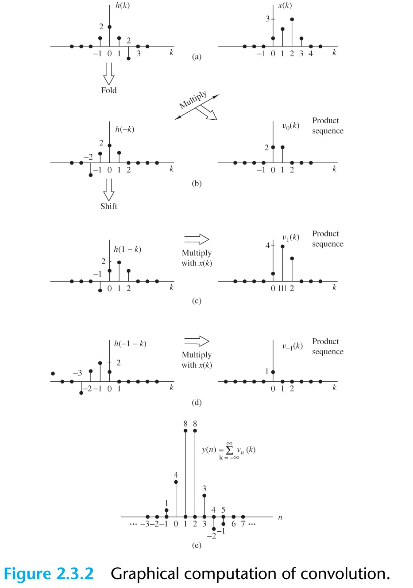
Determina la salida y(n) de un sistema LTI con respuesta al impulso h(n) = anu(n), |a| < 1. Cuando la entrada es la secuencia escalón unitario x(n) = u(n)
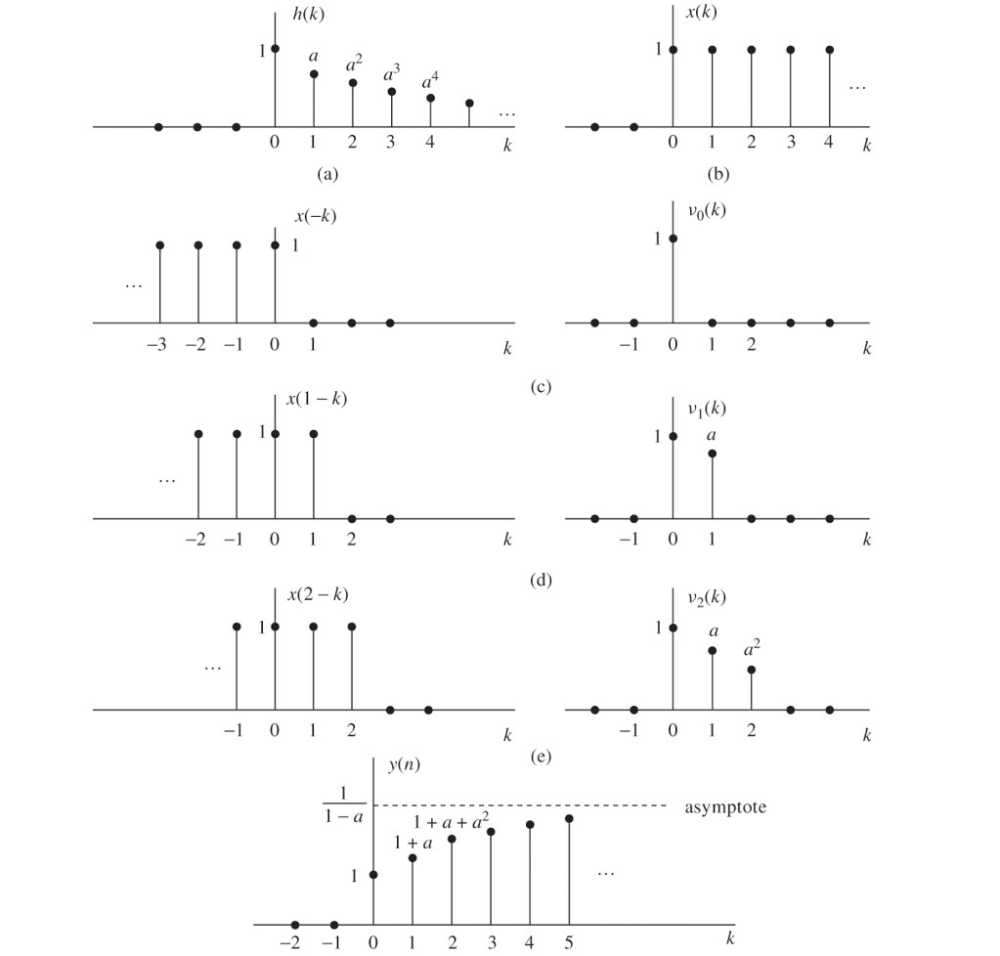
Propiedades de la convolución.
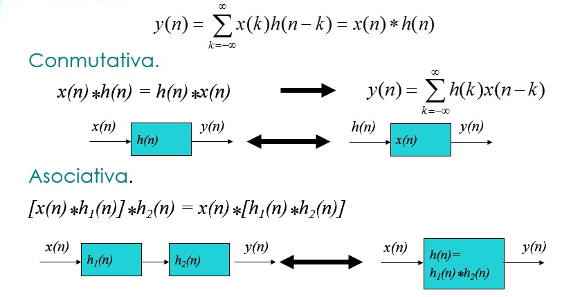
Determina la respuesta al impulso de la cascada de dos sistemas LTI con respuestas al impulso h1(n) = ½nu(n) y h2(n) = ¼nu(n)
Distributiva
x(n)*[h1(n)+h2(n)] = x(n)*h1(n)+x(n)*h2(n)
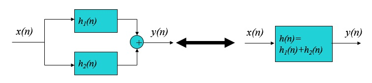
1. La transformada discreta de Fourier.
Muestreo en el dominio de la frecuencia y reconstruccion
de señales en tiempo discreto.
Consideremos una señal aperiódica en tiempo discreto x(n), con transformada de Fourier br>
Ahora, muestreamos X(ω) periódicamente a una tasa de δω = 2π/N radianes. Si ω= 2πk/N entonces cada muestra de X(ω) es
k = 0,1,...,N-1
Reacomodando, tenemos que cada muestra es:
Para k = 0,1,...,N-1
La señal
obtenida repitiendo x(n) cada N muestras, es periódica con periodo fundamental N, y puede desarrollarse en serie de Fourier como
Cuyos coeficientes de Fourier son:
Entonces tenemos que
Por lo tanto la señal periódica xp(n) puede obtenerse a partir de las muestras de X(ω)
x(n) puede recuperarse a partir de xp(n) si no existe aliasing en el dominio del tiempo, es decir, si x(n) no está limitada en tiempo a una duración menor que el periodo N de xp(n).
Dado que x(n) = xp(n) para 0 ≤ n ≤ N – 1 tenemos que la señal original x(n) obtenida de las muestras de X(ω) es
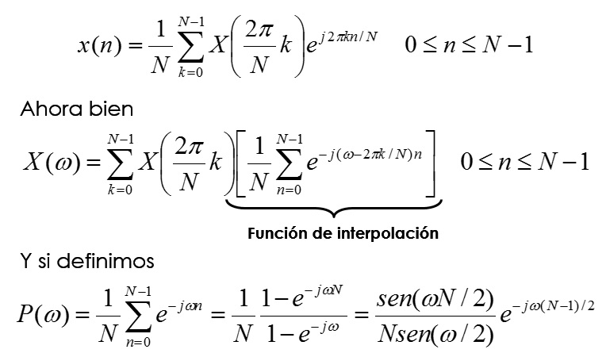
La transformada de Fourier obtenida a partir de sus muestras estará dada por
Donde no se presente aliasing.
P(ω) tiene la propiedad
En consecuencia, obtendremos exactamente los valores de las muestras X(2πk/N) para ω = 2πk/N.
Consideremos la señal x(n) = anu(n) con 0 < a < 1. Su espectro se muestrea a ωk = 2πk/N con k = 0, 1, …, N-1. Determinar el espectro reconstruido para a = 0.8 cuando N = 5 y N = 50
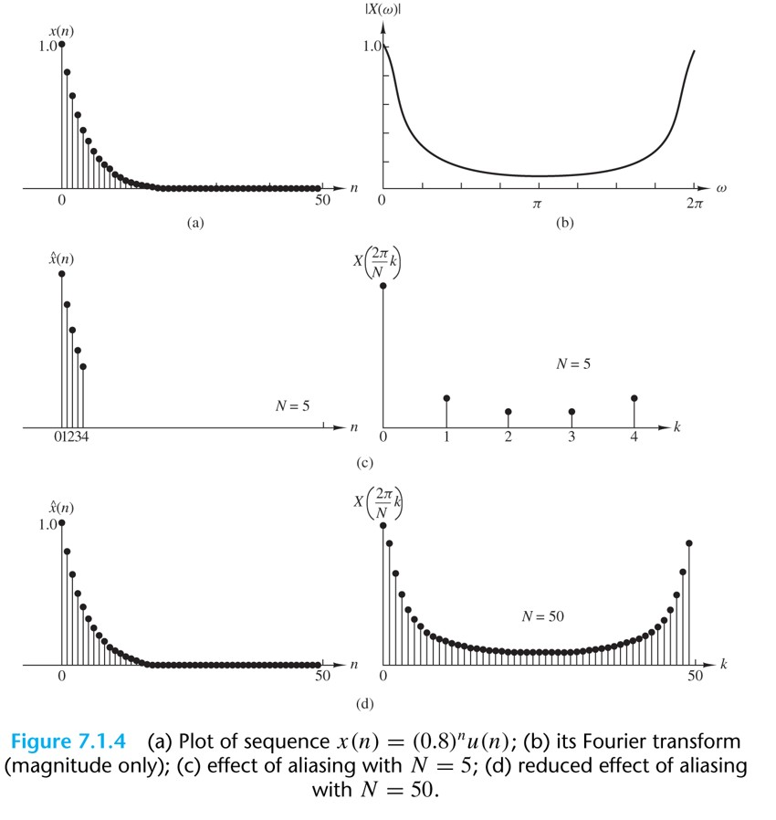
La transformada de Fourier discreta (DFT).
Recordemos que una señal periódica es: 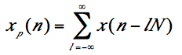
Considerando solo las L muestras de esta señal tenemos 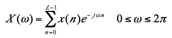
Cuando se muestrea X(ω) a una tasa de 2πk/N podemos decir que 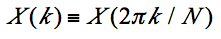
Finalmente, las fórmulas de la DFT e IDFT de x(n) son:
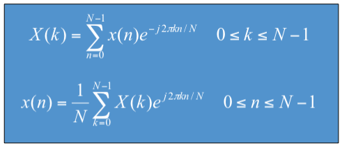
La DFT como una transformación lineal
Las fórmulas para la DFT e IDFT de x(n) se pueden expresar como:
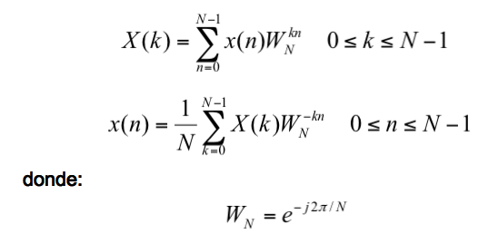
Si definimos las señales como vectores:
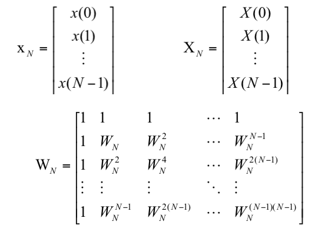
Podemos expresar de forma matricial la DFT: XN = WNXN
Donde WN es la matriz de transformación lineal.
La IDFT se expresa como:
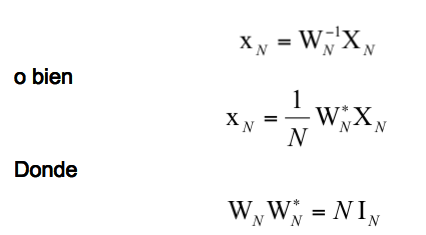
Calcula la DFT de la secuencia de cuatro puntos x(n) = {0 1 2 3}
Propiedades de la DFT
La DFT es un conjunto de N muestras {X(k)} de la TF X(ω) de una señal finita {x(n)} de longitud L ≤ N.
El muestreo de X(ω) se presenta en N frecuencias igualmente espaciadas ωk = 2πk/N, k = 0, 1, 2, .., N-1.
Las N muestras {X(k)} representan a la secuencia {x(n)} en el dominio de la frecuencia.
Las DFT e IDFT de una secuencia {x(n)} de N puntos son:
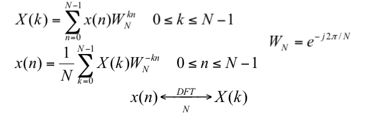
Periodicidad
Si x(n) y X(k) son un par de la DFT de N puntos, entonces
x(n + N) = x(n) para toda n
X(k + N) = X(k) para toda k
Linealidad
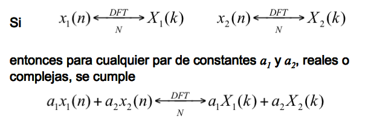
Simetría circular de una secuencia.
La DFT de N puntos de la señal x(n) con longitud L ≤ N equivale a la DFT de N puntos de la secuencia periódica xp(n) de periódo N, la cual se obtiene extendiendo x(n) periódicamente así
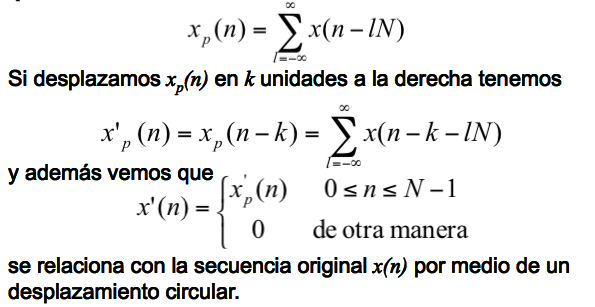
En general, el desplazamiento circular de una secuencia se puede representar como el índice de módulo N.
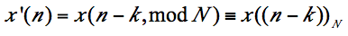
Ejemplo, con k = 2 y N = 4, tenemos: x'(n) = x((n-2))4
Lo cual implica que:
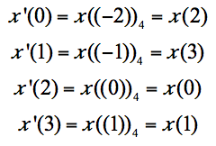
x’(n) es x(n) desplazada circularmente dos unidades de tiempo en el sentido opuesto a las manecillas del reloj.
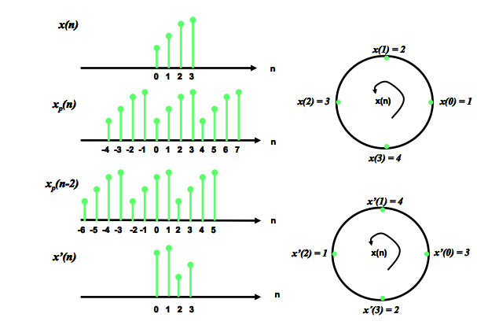
Una secuencia de N puntos es circularmente par si es simétrica respecto al punto cero en el círculo. Esto implica que : x(N - n) = x(n); 1 ≤ n ≤ N - 1
Una secuencia de N puntos es circularmente impar si es antisimétrica respecto al punto cero en el círculo. Esto implica que : x(N - n) = - x(n); 1 ≤ n ≤ N - 1
El tiempo inverso de una secuencia de N puntos se obtiene invirtiendo sus muestras alrededor del punto cero en el círculo. Así, la secuencia x((-n))N esta dada por: x((- n)) = x(N - n); 1 ≤ n ≤ N - 1
que equivale a dibujar x(n) en el sentido de las manecillas del reloj en un círculo.
Propiedades de simetría de la DFT.
Asumimos que la secuencia de N puntos x(n) y su DFT son complejas, pudiéndose expresar como:
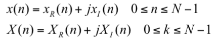
Sustituyendo en la expresión de la DFT:
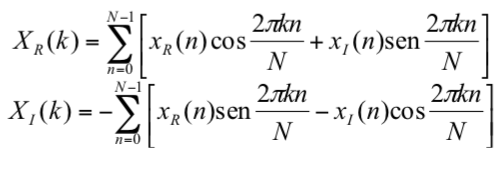
De manera similar, para la IDFT tenemos:
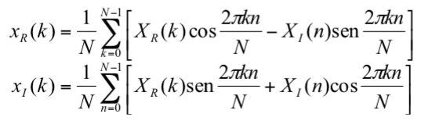
Secuencias reales.
Si x(n) es real, tenemos que: X(N - k) = X*(k) = X(- k)
En consecuencia: 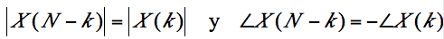
Secuencias reales y pares.
Si x(n) es real y par, esto es: x(n) = x(N - n); 0 ≤ n ≤ N - 1
Entonces X1(k) = 0 y la DFT se reduce a:
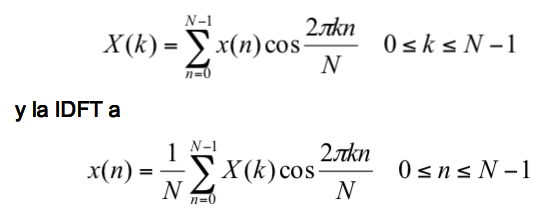
Secuencias reales e impares.
Si x(n) es real e impar, esto es: x(n) = - x(N - n); 0 ≤ n ≤ N - 1
Entonces XR(k) = 0 y la DFT se reduce a:
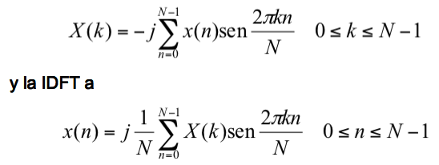
Secuencias puramente imaginarias.
En este caso x(n) = jx1(n) y en consecuencia:
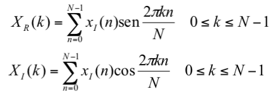
donde XR(k) es impar y XI(k) es par.
Si xI(n) es impar, XI(k) = 0 y por lo tanto X(k) es puramente real.
Si xI(n) es par, XR(k) = 0 y por lo tanto X(k) es puramente imaginaria.
En resumen:
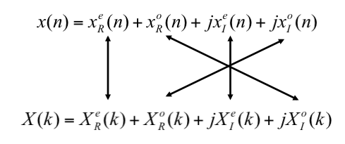
Multiplicación de DFTs y convolución circular.
Tenemos dos señales de longitud N, x1(n) y x2(n) con sus respectivas DFT de N puntos.
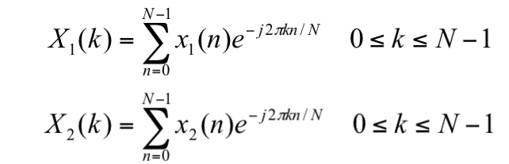
Si las multiplicamos tenemos: X3(k) = X1(k)X2(k) ; k = 0,1,2,...,N-1
que corresponde a una secuencia x3(n) de longitud N.
La IDTF {X3(n)} es:
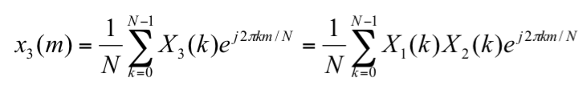
Sustituyendo, manipulando matemáticamente y aplicando convergencias geométricas llegamos a:
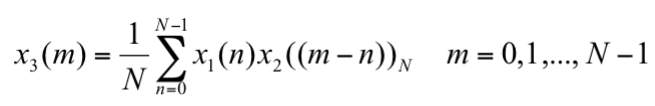
que tiene la forma de una suma de convolución la cual involucra al índice ((m-n))N y es denominada convolución circular.
Realiza la convolución circular de las siguientes dos secuencias:
x1(n) = {2,1,2,1}
x2(n) = {1,2,3,4}
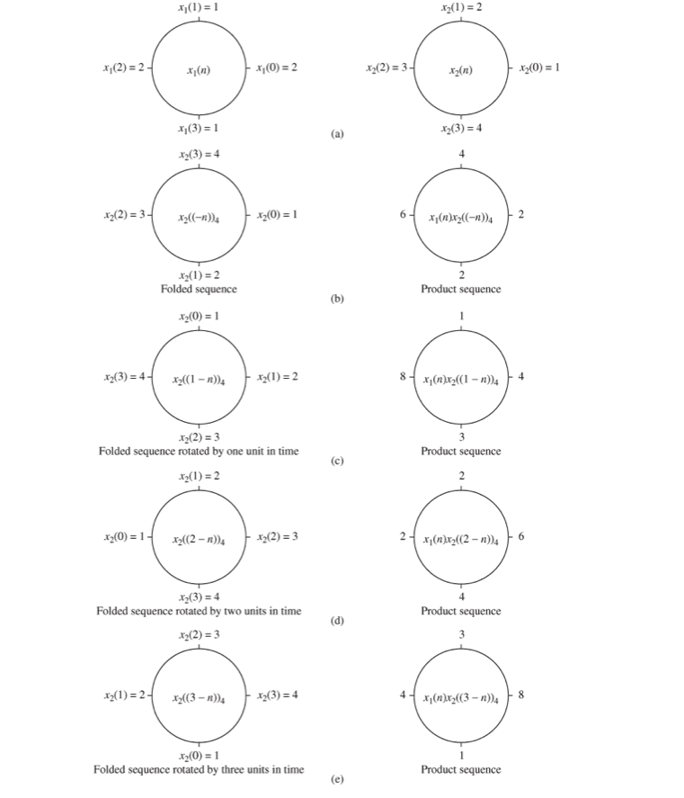
Realiza la convolución de las siguientes dos secuencias a partir de la DFT e IDFT
x1(n) = {2,1,2,1}; x2(n) = {1,2,3,4}
x1(n) = {1,1,1,1,0,0,0,0}; x2(n) = sin (3π/8) n ; donde 0 ≤ n ≤ 7
Convolución circular.
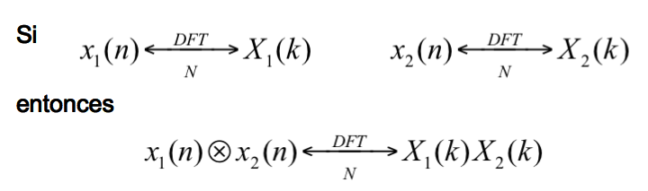
Propiedades adicionales.
Tiempo inverso de una secuencia.
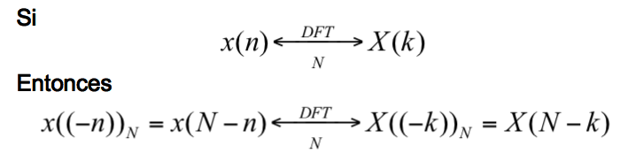
Por lo tanto, invertir la secuencia de N puntos en el tiempo equivale a invertir los valores de la DFT.
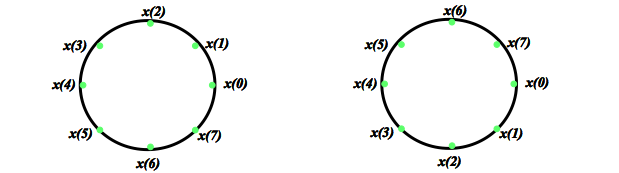
Desplazamiento circular en tiempo de una secuencia.
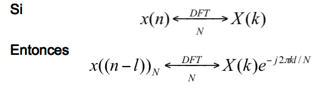
Desplazamiento circular en frecuencia.
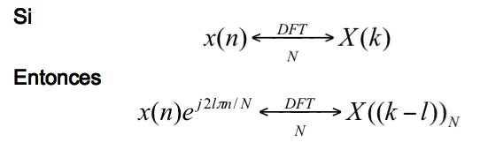
Propiedades del conjugado complejo.
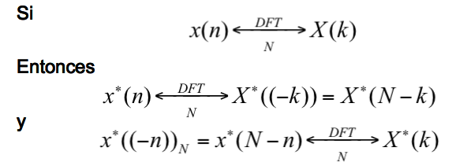
Correlación circular.
En general, para las secuencias complejas x(n) y y(n), si
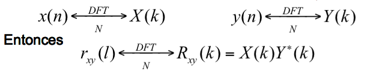
donde rxy(l) es la secuencia de correlación cruzada (no normalizada) definida como:
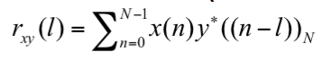
Multiplicación de dos secuencias.
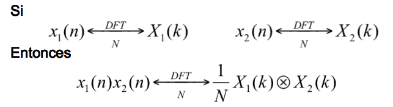
Teorema de Parseval.
En general, para las secuencias complejas x(n) y y(n), si:
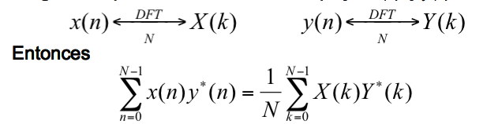
Métodos de filtrado lineal basados en la DFT..
Uso de la DFT en filtrado lineal.
Supogamos que tenemos una secuencia x(n) de longitud L, que excita un filtro FIR de longitud M. Sea
x(n) = 0; n < 0 y n >= L
h(n) = 0; n < 0 y n >= M
Donde h(n) es la respuesta al impulso.
La salida y(n) puede expresarse como:
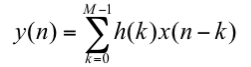
cuya duración es L + M -1.
El equivalente en el dominio de la frecuencia es: Y(ω) = X(ω)H(ω)
Si y(n) se representa través de Y(ω) en un conjunto de frecuencias discretas, el número de éstas debe ser mayor o igual a L + M - 1. Entonces, necesitamos una DFT de tamaño N ≥ L + M - 1, para representar {y(n)} en el dominio de la frecuencia. Ahora, si:
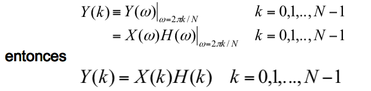
Donde {X(k)} y {H(k)} son las DFTs de N muestras de x(n) y h(n), respectivamente.
Como x(n) y h(n) son menores a N, se rellenan estas secuencias con ceros hasta alcanzar una longitud N.
* Usando TDF y TDFI determinar la respuesta del filtro FIR con respuesta al impulso h(n) = {1, 2, 3} a la secuencia de entrada x(n) = {1, 2, 1, 2} para 8 puntos.
* Determinar la secuencia de salida y(n) resultante de usar cuatro puntos de la TDF del ejemplo anterior. ¿Qué se observa?
Filtrado de secuencias de larga duración.
La entrada se fragmenta en bloques y cada uno se procesa con la TDF y TIDF para obtener bloques de salida que se unen para conseguir la salida global.
Existen dos métodos:
- Método de solapamiento y almacenamiento
- Método de solapamiento y suma.
En ambos, suponemos al filtro FIR de longitud M.
La entrada se fragmenta en bloques de tamaño L.
Donde L >> M .
Método de soplamiento y almacenamiento.
El tamaño de los bloques de entrada es N = L + M – 1.
La longitud de cada TDF y TIDF es N.
Cada bloque de datos contiene al menos M -1 puntos del bloque de datos anterior, seguido de L nuevos puntos.
Se calcula la TDF de N puntos para cada bloque.
Se aumenta el tamaño del filtro de respuesta al impulso agregando L - 1 ceros.
Se calcula la TDF de los N puntos y se almacena.
La multiplicación de las dos TDF de N puntos, {X(k)} y {H(k)}, correspondiente al m-ésimo bloque de datos da lugar a:
Para evitar pérdida de datos por aliasing, se almacenan los últimos M – 1 puntos de cada registro de datos, los cuales vienen a ser los M -1 puntos del registro siguiente.
Para empezar el procesamiento, los M - 1 primeros se hacen iguales a cero. Por lo tanto:
Y así sucesivamente.
Método de soplamiento y suma
El tamaño de los bloques de entrada es L.
La longitud de cada TDF y TIDF es N = L + M - 1.
A cada bloque de datos se le agregan M -1 ceros y se calcula la TDF de N puntos.
Por lo tanto, cada bloque puede representarse como:
y así sucesivamente.
Las dos DFTs de N puntos se multiplican para formar:
Ym(k) = Hm(k)X(k); k = 0,1,...,N-1
La TIDF da como resultado bloques de tamaño N que no están afectados por el aliasing.
Los últimos M -1 puntos de cada bloque de salida deben solaparse y sumarse a los M - 1 primeros del siguiente.
La secuencia de salida es:
2. La Transformada Rápida de Fourier (FFT).
El problema al calcular la TDF se halla en obtener la secuencia {X(k)} de N números complejos a partir de {x(n)} con longitud N según:
En general, se supone que {x(n)} también es compleja.
De manera similar, la TIDF viene dada por:
Tanto para la TDF, como para la TIDF se realizan el mismo tipo de operaciones.
Para cada valor k, el cálculo directo de X(k) supone llevar a cabo N multiplicaciones complejas (4N reales) y N - 1 sumas complejas (4N - 2 reales).
Para calcular los N valores de la TDF se requieren N2 multiplicaciones complejas y N2 - N sumas complejas.
Por eso el cálculo directo de la TDF es ineficiente y no explota las propiedades de simetría y periodicidad del factor de fase WN :
Metodología "divide y vencerás"
Método basado en la descomposición de la TDF de N puntos en TDF más pequeñas, y lleva a una familia de algoritmos computacionalmente eficientes: FFT.
Consideremos el cálculo de una TDF de N puntos donde N = LM.
x(n) puede almacenarse en un vector con índice n, o en una matriz con índices l (renglones) y m (columnas).
Y de igual manera podemos almacenar X(k).
El almacenamiento matricial supone dos posibles configuraciones:
Ponemos a x(n) en una matriz x(l, m) y a X(k) en X(p, q).
Así la TDF puede expresarse de la siguiente manera:
El cálculo de esta TDF tiene tres pasos:
1.- Calcular las TDF de M puntos para cada renglón l = 0,1,...,L-1
2.- Calcular la nueva matriz G(l,q) definida como:
3.- Calcular las TDF de L puntos para cada columna q = 0,1,..., M-1 de la matriz G(l,q).
* Calcular la TDF para N = 15 con L = 5 y M = 3.
Otro algoritmo similar sería:
Resumido de la siguiente manera:
1.- Almacenar la señal por renglones
2.- Calcular la TDF de L puntos en cada columna
3.- Multiplicar la matriz resultante por WNpm
4.- Calcular la TDF de puntos de cada renglón
5.- Leer por columnas la matriz resultante
Comparación de la complejidad computacional entre la TDF y la FFT
Otros algoritmos:
1.- Algoritmos para la FFT base 2
2.- Algoritmos para la FFT base 4
3.- Algoritmos para la FFT de base partida